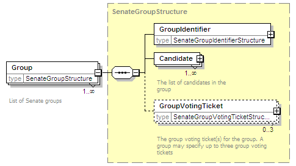

| diagram | |||||
| namespace | http://www.aec.gov.au/xml/schema/mediafeed | ||||
| children | Group | ||||
| used by |
|
||||
| annotation |
|
||||
| source | <xs:group name="SenateGroupsGroup"> <xs:annotation> <xs:documentation>Group of elements used to represent Senate groups and their voting tickets</xs:documentation> </xs:annotation> <xs:sequence> <xs:element name="Group" type="SenateGroupStructure" maxOccurs="unbounded"> <xs:annotation> <xs:documentation>List of Senate groups</xs:documentation> </xs:annotation> </xs:element> </xs:sequence> </xs:group> |
| diagram |  | ||||||||
| namespace | http://www.aec.gov.au/xml/schema/mediafeed | ||||||||
| type | SenateGroupStructure | ||||||||
| properties |
|
||||||||
| children | GroupIdentifier Candidate GroupVotingTicket | ||||||||
| annotation |
|
||||||||
| source | <xs:element name="Group" type="SenateGroupStructure" maxOccurs="unbounded"> <xs:annotation> <xs:documentation>List of Senate groups</xs:documentation> </xs:annotation> </xs:element> |